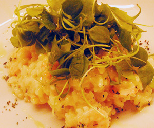

Zitronenrisotto mit Crevetten
5,5 von 6Eine Schalotte fein schneiden und mit dem Risottoreis in Olivenöl andämpfen. Die Schale einer Zitrone fein geraspelt beigeben. Mit Weisswein ablöschen. Immer wieder Wasser und Bouillon beigeben bis der Risotto knapp gar ist. Crevetten (gefroren und gekocht, ohne Schale) beigeben. Mit Salz, Pfeffer und der Saft von ca. einer halben Zitrone, etwas Rahm und eine Prise Thymian abschmecken. 5 Minuten ruhen lassen bis die Crevetten warm sind. Auf die Teller anrichten und mit feinstem Olivenöl sowie etwas Port du Lac (oder Rucola) anrichten.
